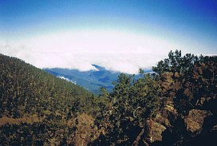

The DR enjoys a tropical climate with the typical year-round warm and humid conditions associated with the Tropics. Seasonal mean temperatures range from 20‐25˚C in the winter months (December to February), to 25‐27˚C in the warmer months of June to August and September to November
Pico Duarte is the largest mountain in the dominican-republic
Pico Duarte is the highest peak in the Dominican Republic, and in all the Caribbean. At 3,098 m (10,164 ft) above sea level, it gives the Dominican Republic the 16th-highest maximum elevation of any island in the world
The most common diaster in the DR is hurricanes and earthquakes

The Dominican Republic is considered a hotspot for natural disasters, with exposure to droughts, earthquakes, flooding, hurricanes, landslides, heat waves, tropical storms, and tsunamis. Between 1980 and 2008, 40 natural disasters affected 2.65 million people—almost a quarter of the country's population

The climate in Dominican Republic is hot, oppressive, windy, and partly cloudy. Over the course of the year, the temperature typically varies from 68°F to 89°F and is rarely below 65°F or above 92°F